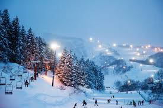

Hybrid Structure
This narrative visualization follows the Martini Glass structure.
Firstly, it starts with the question "Where to ski in Japan?"
Then it lists some editors' recommendations for the best ski resorts in Japan.
Lastly, it allows users to select the best ski resort that fits their skier level.
User can choose to see the locations and over ratings for the skier level they select.
In addtion, tooltip is used in the map chart for a drill-down story. When users hover over on any data points on the map, they can see the name of the ski resort as well as the detail score for piste, snow and culture.
Scenes
There are three scenes used in this narrative visualization. Users can click "Beginner", "Intermediate" or "Advanced" buttons to switch between different scenes.
Scenes are consist in terms of the layout and structure. Annotated chart layout is used in the scene (the map) to provide the overview of the data along with the highlight point.
The scenes follows a user-directed ordering - user selects one of paths designed by the author.
Each scene includes two charts. The map view on the left and the bar chart on the right.
The map shows the locations of those resorts on a Japanese map. This is intuitive to the users because when we talk about a location, we want to know where it is.
It's also helpful for users who want to go to multiple ski resorts in one trip. It's easy to find the clusters on the map so they can choose several resorts that are close together.
The bar chart is also very easy to understand. It provides the overall score for all the ski resorts in decend order.
Both graphs show the overview of all the ski resorts. And then tooltip is used on the map to allow drill-down details on demand.
Annotations
The map chart uses annotations to highlight the best ski resort for the skier level a user select. Annotations cleared between scenes because I only want to show the best ski resort for the category that a user selected.
For example, the annotation of "best for beginner" won't apply to the scenes for intermediate skiers or advanced skiers.
When the user click the button to switch to a different scene, d3 will clear the whole svg including the annotation, and then load the new data and add the corresponding annotations to the scene selected.
Parameters
There are three parameters used in this narrative visualization, "Beginner", "Intermediate" and "Advanced". These paramters allow users to select which scene to show. See below the trigger section for details about how parameters work for the scene control.
Triggers
When users click the button (user interface event: "onclick"), the trigger works here to filter the relevant data and update the data points on the scenes. For example, when a user click "Beginner" button,
an event happens (onclick="select('Beginner')"), and the parameter "Beginner" will be sent to the function "select". The "select" function further calls the "render" function,
which applies a filter to the dataset based on the parameter value when loading the data:
.data(data.filter(function (d){return d.Class==category})).
As a result, the graph will be updated with the filtered dataset.
In addtion, the tooltip in the map also uses triggers. When users hover over the mouse on the dot in the map and then leave, three user interface events are used here:
mouseover: when user's mouse pointer entered the trigging area, it shows the tooltip.
mousemove: every time the mouse pointer is moved over the trigging area, it returns the tooltip details (resort name, scores etc.)
mouseout: when user's mouse pointer is moved out of the trigging area, it hides the tooltip.
Japan's reputation for serving up insane amounts of snow is legendary. From the northern island of Hokkaido to the more southerly island of Kyushu, the nation of Japan boasts over 500 ski resorts. Now, in an ideal world we'd list the pros and cons of every single ski resort in Japan, and tell you every single thing you need to know about them. Unfortunately, it would just take way too long. Instead, here's a walkthrough for some of the best ski resorts in Japan and some convincing reasons why you should visit them.
Niseko, Hokkaido

The town of Niseko, on the island of Hokkaido, won the title of 'Japan's Best Ski Resort' at the World Ski Awards 2015.
Located in the Abuta District, Shiribeshi Subprefecture, Niseko also refers to the biggest and most popular cluster of ski resorts on Japan's northernmost main island.
Niseko is the most famous ski resort in Japan, known for having tons of light powder snow, spectacular backcountry and a large number of foreigners - especially Australians - who in recent years have been responsible for popularizing the resort area with the skiing/snowboarding community outside of Japan. As a result, Niseko's resorts are very accessible and welcoming to foreign visitors, which they keep busy with plenty of vast, long ski runs, endless powder, and a growing number of after-ski activities.
In addition to kilometers of ski trails, many of Niseko's resorts offer winter adventure seekers the option to explore off trail skiing, a relatively uncommon attraction at most other ski resorts in Japan. The backcountry can be accessed through special gates around the resorts or experienced on guided tours and helicopter tours. The latter is also possible on nearby Mount Yotei, a nearly perfect volcanic cone, which can be seen from Niseko.
Shiga Kogen, Honshu
 Size-wise, the Shiga Kogen Ski Area is 4.25 square kilometres (1.64 square miles). It's the largest combined ski area in Japan, and one of the biggest in the world.
This enormous Japanese ski resort, located in the Shiga Highlands of the Nagano Prefecture, is actually made up of approximately 21 smaller resorts that are all interconnected.
With 71 ski lifts waiting to take skiers and snowboarders here, there, and everywhere across the area it's easy to see why so many see Shiga Kogen as the ultimate destination for a ski holiday in Japan.
Size-wise, the Shiga Kogen Ski Area is 4.25 square kilometres (1.64 square miles). It's the largest combined ski area in Japan, and one of the biggest in the world.
This enormous Japanese ski resort, located in the Shiga Highlands of the Nagano Prefecture, is actually made up of approximately 21 smaller resorts that are all interconnected.
With 71 ski lifts waiting to take skiers and snowboarders here, there, and everywhere across the area it's easy to see why so many see Shiga Kogen as the ultimate destination for a ski holiday in Japan.
Shiga Kogen ski area has a huge advantage over others (e.g. Hakuba, Myoko Kogen) in that many of the resorts are inter-connected via the lifts and slopes. Fifteen of the ski resorts at the north-eastern end of Shiga Kogen (the left hand side of the trail map) are inter-connected. This includes the large Yakebitaiyama ski area, Okushiga Kogen and the Ichinose areas, and many visitors to Shiga Kogen may not venture past these fifteen resorts.
To get to the ski resorts on the right hand side of the map, you’ll need to catch a free shuttle bus, which takes about an hour from one end of Shiga Kogen to the other. These resorts are only partially inter-connected. Yokoteyama is connected to Shibutoge, but there’s only a one-way connection with Kumanoyu.
Nozawa Onsen, Honshu
 Nozawa Onsen is located in the northern part of the Nagano Prefecture on the main island of Honshu. The resort is 46km northeast of the city of Nagano and 249km northwest of Tokyo. It is easily reached by bullet train, bus or taxi as detailed at the end of this post.
The ski area on Nozawa Onsen is one of the largest in Japan covering some 298 hectares with 50 runs suitable for all levels. A bonus is that there is guaranteed snow, with an average depth of 3.5 meters of mostly powder.
Nozawa Onsen is located in the northern part of the Nagano Prefecture on the main island of Honshu. The resort is 46km northeast of the city of Nagano and 249km northwest of Tokyo. It is easily reached by bullet train, bus or taxi as detailed at the end of this post.
The ski area on Nozawa Onsen is one of the largest in Japan covering some 298 hectares with 50 runs suitable for all levels. A bonus is that there is guaranteed snow, with an average depth of 3.5 meters of mostly powder.
There is also a vertical fall of 1085 metres making for some very long runs. One of the runs for beginner to intermediate levels is 10kms. Snowboarders and skiers have a lot of choices and going off-piste are really popular with daredevil skiers.
Many of the runs are very wide, and the slopes are not at all crowded. On piste, there are many traditional Japanese cafes. What we found here is that the villagers are very welcoming people who create a really good atmosphere.